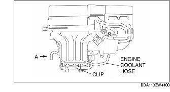
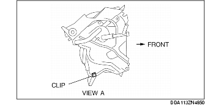

Intake-air system removal/installation [ZY]
- • A hot engine and intake air system can cause severe burns. Turn off the engine and wait until they are cool before removing the intake air system.
- • Fuel line spills and leakage from the pressurized fuel system are dangerous. Fuel can ignite and cause serious injury or death and damage. Fuel can also irritate skin and eyes. To prevent this, always complete the "Fuel Line Safety Procedure". (See BEFORE SERVICE PRECAUTION [ZY].)
- • The PCM is built into the air cleaner cover. Applying excessive pressure to the cover could damage the PCM. Be careful not to put your hands on the PCM during the removal/installation.
- • Removing the PCM from the air cleaner could damage the sealing or the circuitry. Do not remove the PCM from the air cleaner.
1. Disconnect the negative battery cable.
2. Remove the battery. (See BATTERY REMOVAL/INSTALLATION [ZY].)
3. Before removal engine coolant hose, drain the engine coolant. (See ENGINE COOLANT REPLACEMENT [ZY].)
4. Remove in the order indicated in the table.
5. Install in the reverse order of removal.
6. Complete the "AFTER SERVICE PRECAUTION". (See AFTER SERVICE PRECAUTION [ZY].)

|
1
|
PCM connector cover
|
|
2
|
PCM connector
|
|
3
|
Air cleaner cover
|
|
4
|
Air cleaner element
|
|
5
|
Air cleaner case
|
|
6
|
Fresh-air duct
|
|
7
|
Air hose
(See Air Hose Removal Note.)
|
|
8
|
Engine coolant hose
|
|
9
|
Throttle body
|
|
10
|
EGR pipe (Intake manifold side)
(See EGR Pipe Installation Note.)
|
|
11
|
Fuel distributor
|
|
12
|
Intake manifold
(See Intake Manifold Removal Note.)
|
Air Hose Removal Note
1. Move the purge solenoid valve slightly out of the way without removing the air hose.
EGR Pipe Installation Note
1. Perform the following procedure for easier access.

2. Remove in the order indicated shown in the figure.

Intake Manifold Removal Note
1. Remove the clip shown in the figure.

2. Loosen the intake manifold bolts and set the intake manifold aside for easier access.
3. Remove the clip shown in the figure and set the engine coolant hose out of the way.

PCM Connector Installation Note
1. Insert the PCM connector fully into the air cleaner and push the lever until a click is heard.